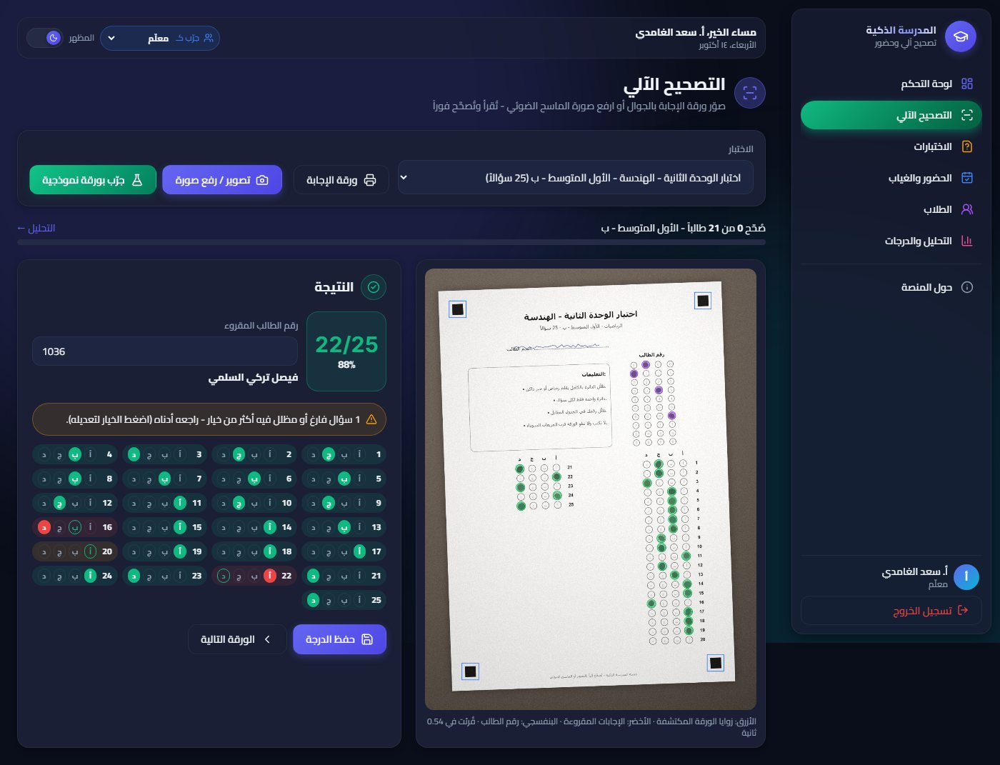
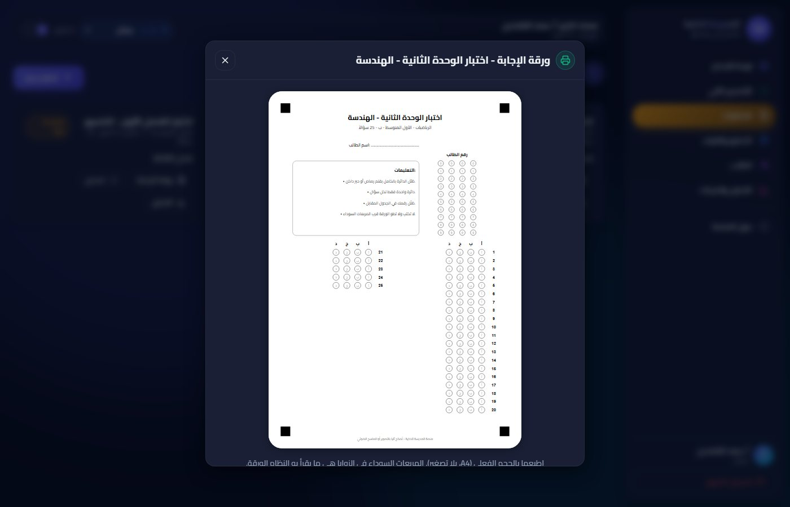
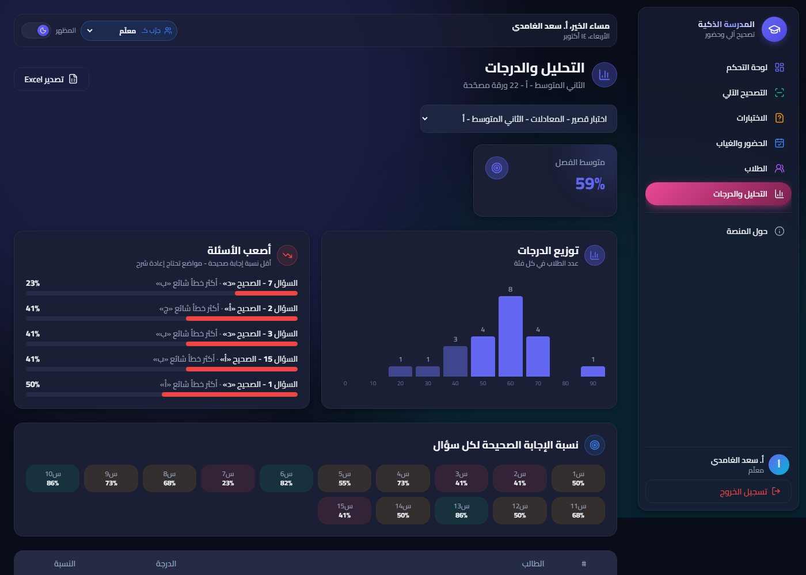
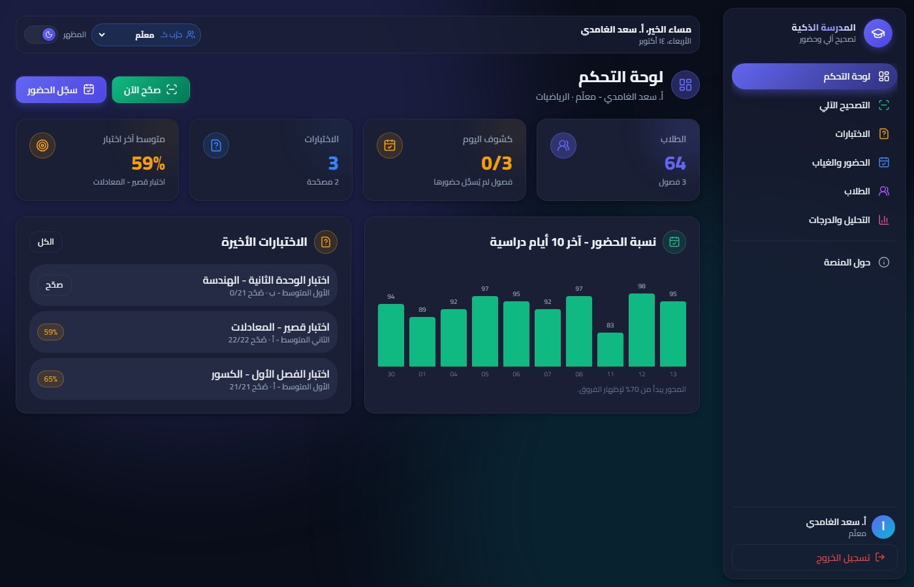
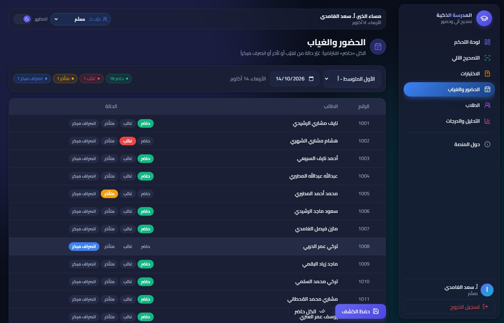
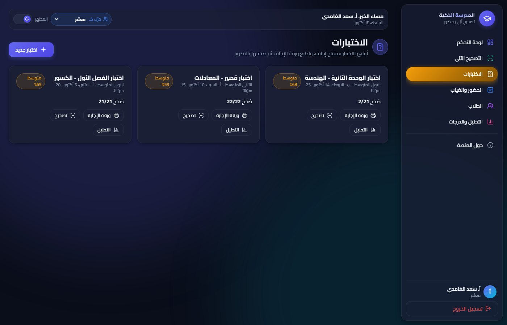
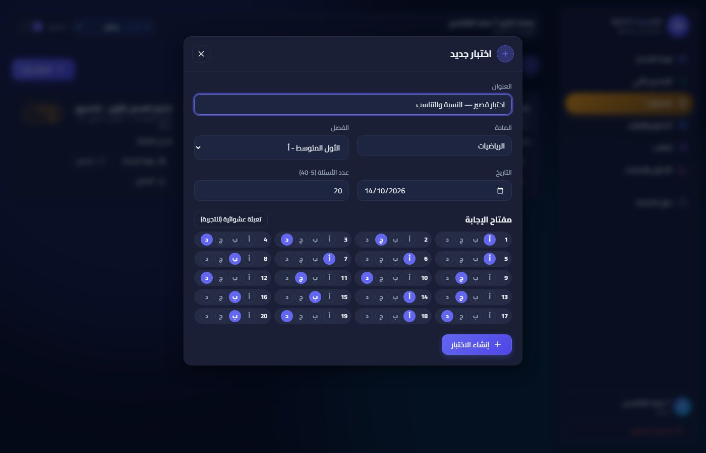
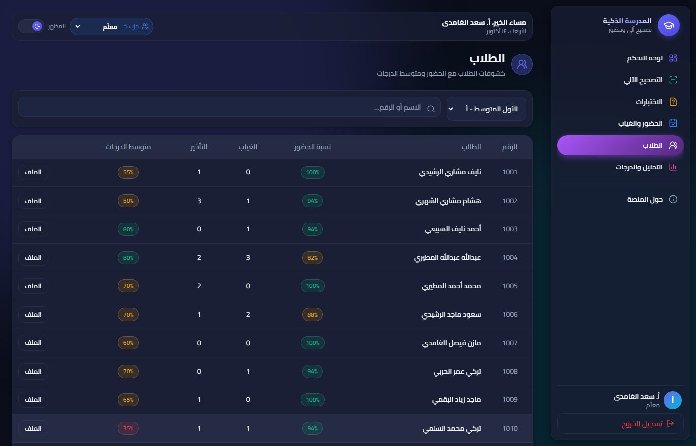
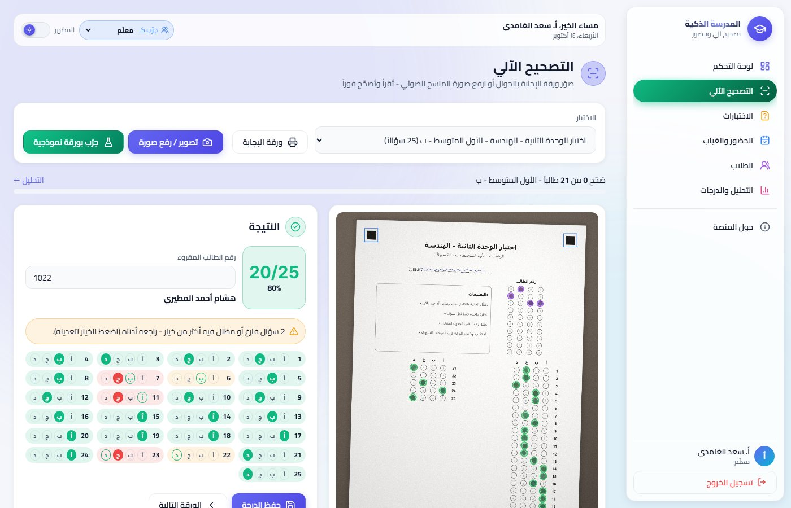
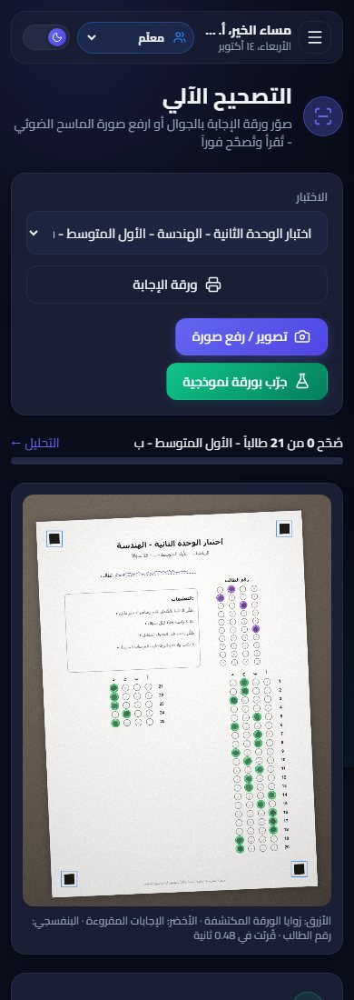

تصحيح آلي لأوراق الإجابة من صورة بالجوال أو الماسح الضوئي، وكشوفات الحضور والغياب والانصراف، وتحليل للدرجات يكشف نقاط الضعف - في منصة واحدة للمدرسة والمعلمين.
تصحيح أوراق الاختيار من متعدد يدوياً يستهلك ساعات من وقت المعلم، ويحتمل الخطأ، ولا يعطي صورة عن الأسئلة التي لم يفهمها الطلاب. وكشوفات الحضور الورقية يصعب جمعها ومتابعتها. هذه المنصة تصحّح الورقة في أقل من ثانية، وتحلّل النتائج، وتجمع الحضور في مكان واحد.
كل ميزة أدناه موجودة وتعمل في النسخة التجريبية.
يصوّر المعلم ورقة الإجابة بالجوال أو يرفع صورة الماسح؛ يُقرأ رقم الطالب وإجاباته وتُقارن بالمفتاح في أقل من ثانية - حتى لو كانت الصورة مائلة أو الإضاءة غير متساوية.
تتولد آلياً بعدد الأسئلة (حتى 40)، مع جدول رقم الطالب، وتُطبع A4 من أي طابعة.
ينبّه النظام للأسئلة الفارغة أو المظللة بأكثر من خيار، ويستطيع المعلم تعديل أي إجابة بنقرة قبل الحفظ.
كشف يومي لكل فصل: حاضر، غائب، متأخر، انصراف مبكر - بنقرة لكل طالب، مع سجل كامل.
متوسط الفصل، وأعلى وأدنى درجة، ونسبة النجاح، وتوزيع الدرجات، ونسبة الإجابة الصحيحة لكل سؤال.
يكشف الأسئلة التي أخطأ فيها أغلب الطلاب، وأكثر خيار خاطئ اختاروه - لإعادة شرح الموضع بدقة.
نسبة حضوره، وغيابه وتأخيره، ودرجاته في كل اختبار.
المعلم يصحّح ويسجّل الحضور من جواله، والإدارة تتابع من الحاسوب.
المعلم يرى فصوله فقط، ومدير المدرسة يرى كل الفصول.
النسخة التجريبية تعمل في متصفحك، وما تضيفه يُحفظ عندك فقط، فجرّب بحرية.
teacherمدير المدرسة: principalكلمة المرور لكل الحسابات: 1234، أو اضغط اسم الحساب في صفحة الدخول.
اضغط أي صورة لتكبيرها.










هذه النسخة تُثبت فكرة التصحيح الآلي وتعمل في متصفحك. النسخة النهائية منصة كاملة للمدرسة.
خادم وقاعدة بيانات تحفظ كل الطلاب والاختبارات والحضور، مشتركة بين المعلمين والإدارة.
تطبيق للمعلم يصوّر الأوراق ويسجّل الحضور، حسب المطلوب.
رفع ملف PDF من الماسح الضوئي فيه أوراق فصل كامل وتصحيحها دفعة واحدة.
تقارير للطالب ولولي الأمر، وإشعارات الغياب - حسب احتياج المدرسة.
حسابات للمعلمين والإدارة، كلمات مرور مشفّرة، ونسخ احتياطي آلي.
بنية تسمح بإضافة أفكار المدرسة القادمة دون إعادة البناء.
تسليم على مراحل، وتجربة نسخة عاملة مبكراً.